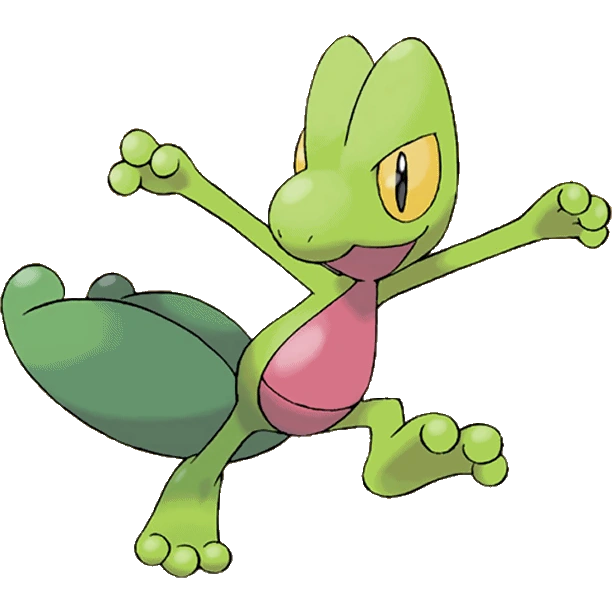
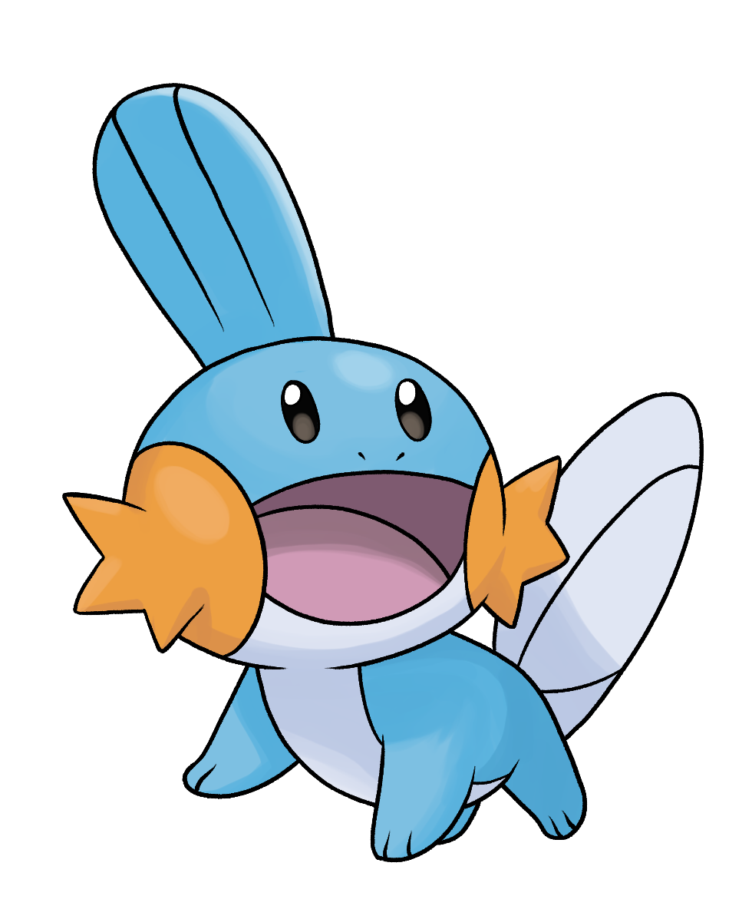
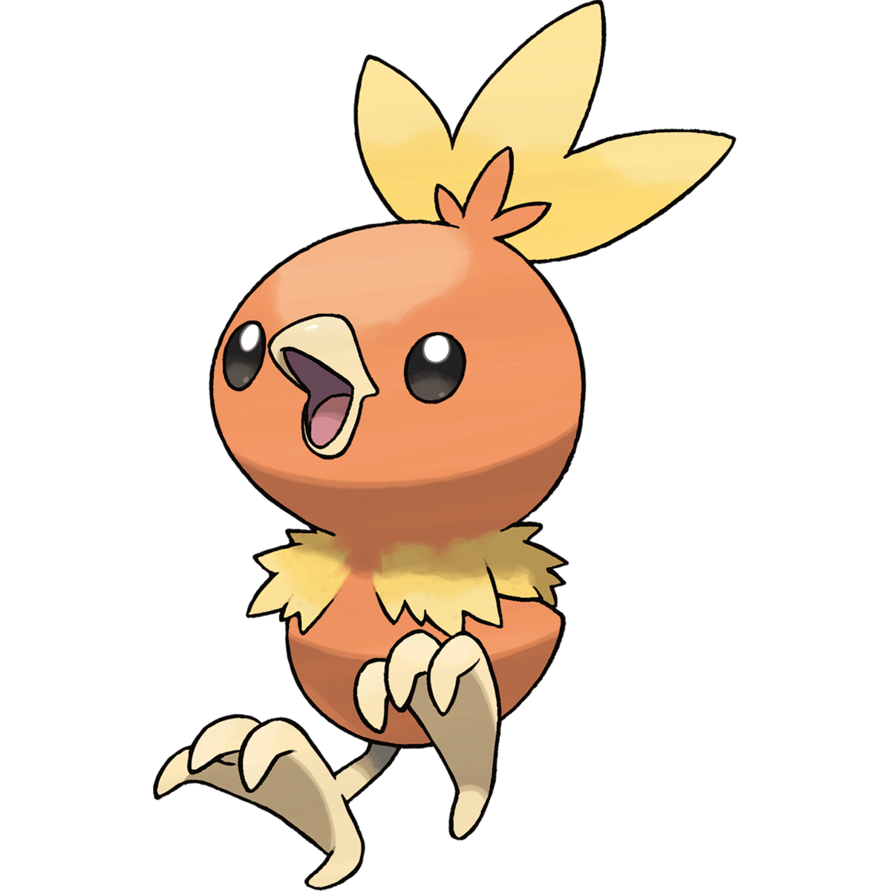

Treecko (Japanese: Kimori) is a Grass-type Pokemon introduced in Generation III. Treecko is a small, green, bipedal reptilian Pokemon. It has yellow eyes with long, narrow pupils. Treecko's hands and feet each have three digits covered with tiny spikes. These spikes allow it to scale vertical walls with ease. Its stomach and throat are red. It also has a line across its stomach resembling a pouch. Treecko has a large, dark green tail with two separate lobes that it uses to sense humidity. This ability allows it to predict the next day's weather.
Mudkip (Japanese: Mizugorou) is a Water-type Pokemon introduced in Generation III. Mudkip is a small, amphibious, quadrupedal Pokemon. It has a blue body with a light-blue underside. Mudkip has a large head with a blue fin on top and a light-blue tail fin. It has black, beady eyes and orange, star-shaped gills on its cheeks. By using the fin on its head, Mudkip can detect changes in air and water currents as well as bodies of water. Its fin can also point in a certain direction, as seen in the anime. Mudkip is capable of moving or crushing boulders larger than itself. Its large tail fin provides powerful acceleration to propel it through the water.
Torchic (Japanese: Achamo) is a Fire-type Pokemon introduced in Generation III. Torchic is a small, chick Pokemon with stubby, downy, yellow wings. Its body is covered with orange feathers. There is an orange and yellow crest on its head that resembles a flame. Its two thin legs and short beak are a light brownish yellow, and the feet have three toes in front and one in the back. A male Torchic will have a small black speck on its rear that is not present in females.
